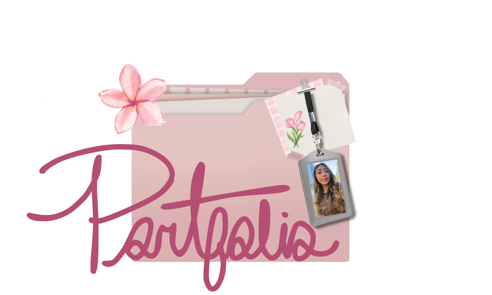

Software Engineering
Former Software Engineering Intern at LPL Financial, contributing to production applications used by over 32,000 financial advisors.
Latina in Tech | Student | Leader

Hello! I'm Kenia, a Mathematics and Computer Science student at UC San Diego with a passion for technology, STEM outreach, and bridging the gap between communities like my own and pathways to higher education and opportunity. Keep scrolling to learn more about my professional journey!
Former Software Engineering Intern at LPL Financial, contributing to production applications used by over 32,000 financial advisors.
Co-President of SHPE and ColorStack at UC San Diego, with a passion for mentorship and STEM outreach.
My professional experience.
SHPE at UC San Diego Co-President
Colorstack at UC San Diego Co-President
SHPE Regional Student Representative | Region 2
Get in touch!